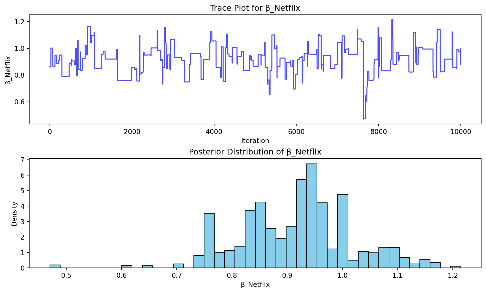
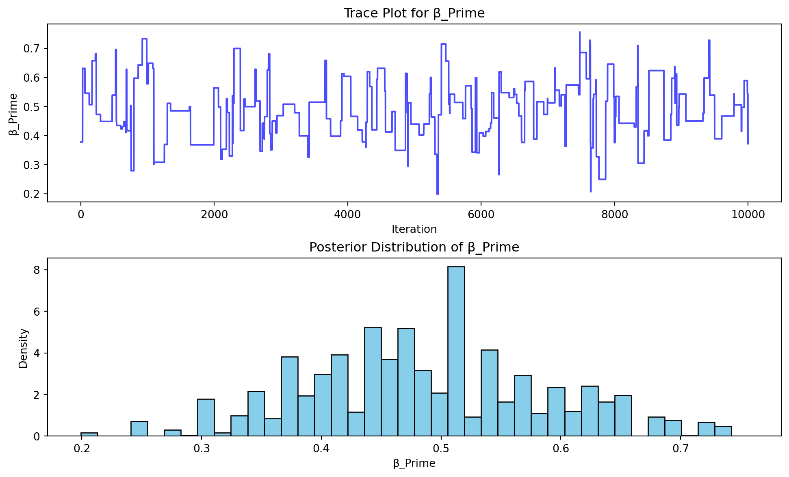
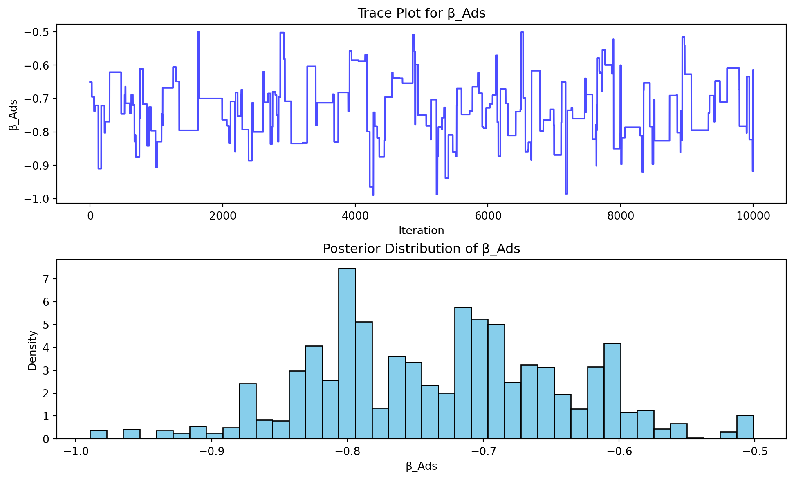
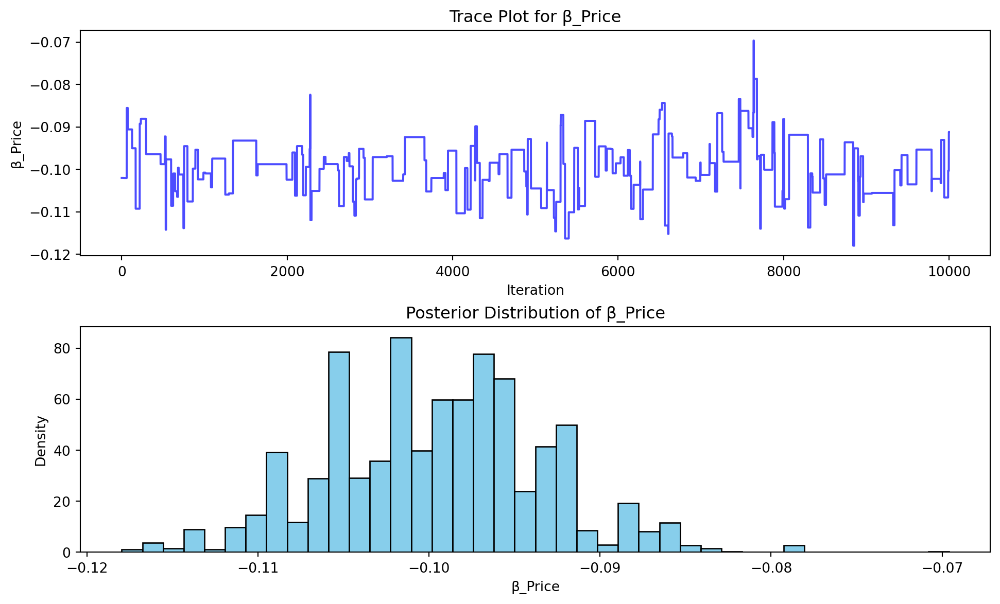

import numpy as np
import pandas as pd
# Set seed for reproducibility
np.random.seed(123)
# Define attributes
brands = ["N", "P", "H"] # Netflix, Prime, Hulu
ads = ["Yes", "No"] # Yes = with ads, No = ad-free
prices = np.arange(8, 33, 4) # $8 to $32 in steps of $4
# Generate all possible profiles
profiles = pd.DataFrame(
[{"brand": b, "ad": a, "price": p} for b in brands for a in ads for p in prices]
)
m = len(profiles)
# Define part-worth utilities (true coefficients)
b_util = {"N": 1.0, "P": 0.5, "H": 0.0}
a_util = {"Yes": -0.8, "No": 0.0}
def p_util(p):
return -0.1 * p
# Simulation parameters
n_peeps = 100 # respondents
n_tasks = 10 # choice tasks per respondent
n_alts = 3 # alternatives per task
# Function to simulate one respondent's data
def sim_one(id):
datlist = []
for t in range(1, n_tasks + 1):
# Randomly sample 3 alternatives
sampled = profiles.sample(n=n_alts).copy()
sampled["resp"] = id
sampled["task"] = t
# Compute deterministic utility
sampled["v"] = (
sampled["brand"].map(b_util)
+ sampled["ad"].map(a_util)
+ sampled["price"].apply(p_util)
).round(10)
# Add Gumbel-distributed error
sampled["e"] = -np.log(-np.log(np.random.uniform(size=n_alts)))
# Total utility
sampled["u"] = sampled["v"] + sampled["e"]
# Identify chosen alternative
sampled["choice"] = (sampled["u"] == sampled["u"].max()).astype(int)
datlist.append(sampled)
return pd.concat(datlist, ignore_index=True)
# Simulate for all respondents
conjoint_data = pd.concat(
[sim_one(i) for i in range(1, n_peeps + 1)], ignore_index=True
)
# Keep only observable variables
conjoint_data = conjoint_data[["resp", "task", "brand", "ad", "price", "choice"]]Multinomial Logit Model
This assignment expores two methods for estimating the MNL model: (1) via Maximum Likelihood, and (2) via a Bayesian approach using a Metropolis-Hastings MCMC algorithm.
1. Likelihood for the Multi-nomial Logit (MNL) Model
Suppose we have \(i=1,\ldots,n\) consumers who each select exactly one product \(j\) from a set of \(J\) products. The outcome variable is the identity of the product chosen \(y_i \in \{1, \ldots, J\}\) or equivalently a vector of \(J-1\) zeros and \(1\) one, where the \(1\) indicates the selected product. For example, if the third product was chosen out of 3 products, then either \(y=3\) or \(y=(0,0,1)\) depending on how we want to represent it. Suppose also that we have a vector of data on each product \(x_j\) (eg, brand, price, etc.).
We model the consumer’s decision as the selection of the product that provides the most utility, and we’ll specify the utility function as a linear function of the product characteristics:
\[ U_{ij} = x_j'\beta + \epsilon_{ij} \]
where \(\epsilon_{ij}\) is an i.i.d. extreme value error term.
The choice of the i.i.d. extreme value error term leads to a closed-form expression for the probability that consumer \(i\) chooses product \(j\):
\[ \mathbb{P}_i(j) = \frac{e^{x_j'\beta}}{\sum_{k=1}^Je^{x_k'\beta}} \]
For example, if there are 3 products, the probability that consumer \(i\) chooses product 3 is:
\[ \mathbb{P}_i(3) = \frac{e^{x_3'\beta}}{e^{x_1'\beta} + e^{x_2'\beta} + e^{x_3'\beta}} \]
A clever way to write the individual likelihood function for consumer \(i\) is the product of the \(J\) probabilities, each raised to the power of an indicator variable (\(\delta_{ij}\)) that indicates the chosen product:
\[ L_i(\beta) = \prod_{j=1}^J \mathbb{P}_i(j)^{\delta_{ij}} = \mathbb{P}_i(1)^{\delta_{i1}} \times \ldots \times \mathbb{P}_i(J)^{\delta_{iJ}}\]
Notice that if the consumer selected product \(j=3\), then \(\delta_{i3}=1\) while \(\delta_{i1}=\delta_{i2}=0\) and the likelihood is:
\[ L_i(\beta) = \mathbb{P}_i(1)^0 \times \mathbb{P}_i(2)^0 \times \mathbb{P}_i(3)^1 = \mathbb{P}_i(3) = \frac{e^{x_3'\beta}}{\sum_{k=1}^3e^{x_k'\beta}} \]
The joint likelihood (across all consumers) is the product of the \(n\) individual likelihoods:
\[ L_n(\beta) = \prod_{i=1}^n L_i(\beta) = \prod_{i=1}^n \prod_{j=1}^J \mathbb{P}_i(j)^{\delta_{ij}} \]
And the joint log-likelihood function is:
\[ \ell_n(\beta) = \sum_{i=1}^n \sum_{j=1}^J \delta_{ij} \log(\mathbb{P}_i(j)) \]
2. Simulate Conjoint Data
We will simulate data from a conjoint experiment about video content streaming services. We elect to simulate 100 respondents, each completing 10 choice tasks, where they choose from three alternatives per task. For simplicity, there is not a “no choice” option; each simulated respondent must select one of the 3 alternatives.
Each alternative is a hypothetical streaming offer consistent of three attributes: (1) brand is either Netflix, Amazon Prime, or Hulu; (2) ads can either be part of the experience, or it can be ad-free, and (3) price per month ranges from $4 to $32 in increments of $4.
The part-worths (ie, preference weights or beta parameters) for the attribute levels will be 1.0 for Netflix, 0.5 for Amazon Prime (with 0 for Hulu as the reference brand); -0.8 for included adverstisements (0 for ad-free); and -0.1*price so that utility to consumer \(i\) for hypothethical streaming service \(j\) is
\[ u_{ij} = (1 \times Netflix_j) + (0.5 \times Prime_j) + (-0.8*Ads_j) - 0.1\times Price_j + \varepsilon_{ij} \]
where the variables are binary indicators and \(\varepsilon\) is Type 1 Extreme Value (ie, Gumble) distributed.
The following code provides the simulation of the conjoint data.
Note
3. Preparing the Data for Estimation
The “hard part” of the MNL likelihood function is organizing the data, as we need to keep track of 3 dimensions (consumer \(i\), covariate \(k\), and product \(j\)) instead of the typical 2 dimensions for cross-sectional regression models (consumer \(i\) and covariate \(k\)). The fact that each task for each respondent has the same number of alternatives (3) helps. In addition, we need to convert the categorical variables for brand and ads into binary variables.
Code
conjoint_data = pd.read_csv("../../data/conjoint_data.csv")
conjoint_data["brand_N"] = (conjoint_data["brand"] == "N").astype(int)
conjoint_data["brand_P"] = (conjoint_data["brand"] == "P").astype(int)
conjoint_data["ad_yes"] = (conjoint_data["ad"] == "Yes").astype(int)
# Drop original columns
conjoint_data = conjoint_data.drop(columns=["brand", "ad"])
conjoint_data.head()| resp | task | choice | price | brand_N | brand_P | ad_yes | |
|---|---|---|---|---|---|---|---|
| 0 | 1 | 1 | 1 | 28 | 1 | 0 | 1 |
| 1 | 1 | 1 | 0 | 16 | 0 | 0 | 1 |
| 2 | 1 | 1 | 0 | 16 | 0 | 1 | 1 |
| 3 | 1 | 2 | 0 | 32 | 1 | 0 | 1 |
| 4 | 1 | 2 | 1 | 16 | 0 | 1 | 1 |
4. Estimation via Maximum Likelihood
Code for log-likelihood function: First, I built a log-likelihood function to evaluate the fit of the Maximum Likelihood model, with four inputs, beta, X, y, and the unique respondent and task combination.
- beta: model coefficient
- X: feature matrix
- y: binary outcome of chosen or not
- resp_task: an array that identifies the respondent and task combination for each row
The function first calculates the utilities of each option. Then, it groups relevant rows, applies the softmax function to convert the utilities into choice probability, and select the log-probability of the alternative choices. Finally, it sums up and computes the total log-likelihood.
from scipy.special import logsumexp
def log_likelihood(beta, X, y, resp_task):
"""
beta: model coefficients (K,)
X: matrix of feature variables (N, K)
y: binary vector indicating chosen option (N,)
resp_task: array of (resp, task) IDs (N, 2)
"""
utilities = X @ beta
unique_choice_sets, choice_set_indices = np.unique(
resp_task, axis=0, return_inverse=True
)
num_unique_sets = len(unique_choice_sets)
log_sum_set = np.zeros(num_unique_sets)
for i in range(num_unique_sets):
mask = choice_set_indices == i
log_sum_set[i] = logsumexp(utilities[mask])
log_sum_for_each_row = log_sum_set[choice_set_indices]
all_log_probs = utilities - log_sum_for_each_row
total_log_likelihood = np.sum(all_log_probs[y == 1])
return -total_log_likelihoodThen, I utilized scipy.optimize.minimize from Python to estimate the parameters of a Multinomial Logit (MNL) model, and the optimization procedure was performed using the BFGS algorithm. Although the optimizer did not fully converge since the success is stated as False, the parameter estimates are very close to the true values used in the data simulation, suggesting that the implementation of the log-likelihood function is correct.
Code
from scipy.optimize import minimize
X = conjoint_data[["brand_N", "brand_P", "ad_yes", "price"]].to_numpy()
y = conjoint_data["choice"].to_numpy()
id_task_pairs = conjoint_data[["resp", "task"]].to_numpy()
init_beta = np.zeros(X.shape[1])
result = minimize(
log_likelihood,
init_beta,
args=(
X,
y,
id_task_pairs,
),
method="BFGS",
)
result message: Optimization terminated successfully.
success: True
status: 0
fun: 879.8553682671945
x: [ 9.412e-01 5.016e-01 -7.320e-01 -9.948e-02]
nit: 14
jac: [ 0.000e+00 0.000e+00 0.000e+00 7.629e-06]
hess_inv: [[ 9.148e-03 2.593e-03 -2.635e-03 -1.381e-04]
[ 2.593e-03 7.178e-03 -3.174e-03 -5.897e-05]
[-2.635e-03 -3.174e-03 7.114e-03 9.435e-05]
[-1.381e-04 -5.897e-05 9.435e-05 4.055e-05]]
nfev: 100
njev: 20The estimated coefficients (x) are:
- β_Netflix ≈ 0.9412
- β_Prime ≈ 0.5016
- β_Ads ≈ -0.7320
- β_Price ≈ -0.0995
These estimates are consistent with the true parameters used to generate the data:
- β_Netflix = 1.0
- β_Prime = 0.5
- β_Ads = -0.8
- β_Price = -0.1
Even with a ‘precision loss’ warning, the optimization algorithm successfully completed 14 iterations and performed 130 function evaluations (nfev: 130). This suggests significant progress was made, likely bringing the optimization close to the maximum log-likelihood. The returned inverse Hessian matrix (hess_inv) is valuable for calculating standard errors of the parameter estimates, which can then further be used to construct 95% confidence intervals and evaluate statistical significance.
Code
beta_hat = result.x
hessian_inv = result.hess_inv
se = np.sqrt(np.diag(hessian_inv))
z = 1.96
for i, name in enumerate(["Netflix", "Prime", "Ads", "Price"]):
ci_lower = beta_hat[i] - z * se[i]
ci_upper = beta_hat[i] + z * se[i]
print(
f"β_{name:<7}: {beta_hat[i]:.4f} (SE: {se[i]:.4f}) 95% CI: [{ci_lower:.4f}, {ci_upper:.4f}]"
)β_Netflix: 0.9412 (SE: 0.0956) 95% CI: [0.7537, 1.1287]
β_Prime : 0.5016 (SE: 0.0847) 95% CI: [0.3356, 0.6677]
β_Ads : -0.7320 (SE: 0.0843) 95% CI: [-0.8973, -0.5667]
β_Price : -0.0995 (SE: 0.0064) 95% CI: [-0.1120, -0.0870]According to the 95% confidence intervals, there are positive preferences comparing to Hulu(β_Netflix ≈ 0.9412, β_Prime ≈ 0.5016). Having ads yields a negative utility result(β_Ads ≈ -0.7320) than without ads. As for prices, lower prices tend to be more attractive(β_Price = -0.1) but not as much as without ads.
5. Estimation via Bayesian Methods
Metropolis-Hastings MCMC Sampler for MNL
In this part, I used a Metropolis-Hastings MCMC sampler to draw samples from the posterior distribution of the parameter vector
\[ \beta = [\beta_{\text{Netflix}}, \beta_{\text{Prime}}, \beta_{\text{Ads}}, \beta_{\text{Price}}] \]
in the Multinomial Logit model.
The method proceeds as follows:
Initialization: Start with an initial parameter vector \(\beta = \mathbf{0}\).
Proposal step: At each iteration, propose a new candidate parameter \(\beta^{\text{new}}\) by drawing from a multivariate normal distribution centered at the current value.
- We use \(\mathcal{N}(0, 0.05)\) for the first three coefficients (binary features) and \(\mathcal{N}(0, 0.005)\) for the price coefficient to ensure stable exploration.
Acceptance step:
Compute the log posterior probability for both the current and proposed parameter vectors.
Calculate the log acceptance ratio: \[ \log \alpha = \log P(\beta^{\text{new}} \mid \text{data}) - \log P(\beta^{\text{current}} \mid \text{data}) \]
Accept the new proposal with probability \(\alpha\). In log terms, accept if:
- ^{} > ^{}
- ^{} < ^{} and ^{} / ^{} > random number
Iteration: Repeat for 11,000 iterations, discarding the first 1,000 results to ensure convergence.
Code
def prior(beta):
# brand_N, brand_P, ad_yes
feature = -0.5 * ((beta[:3] / np.sqrt(5))**2 + np.log(2 * np.pi * 5))
# price
price = -0.5 * ((beta[3] / 1)**2 + np.log(2 * np.pi * 1))
return np.sum(feature) + price
def posterior(beta, X, y, resp_task):
return -log_likelihood(beta, X, y, resp_task) + prior(beta)
def propose(beta):
proposal = np.copy(beta)
proposal[:3] += np.random.normal(0, np.sqrt(0.05), 3)
proposal[3] += np.random.normal(0, np.sqrt(0.005), 1)
return proposal
#MCMC Sampler
def metropolis_hastings(posterior, X, y, resp_task, n_iter=11000, burn=1000):
beta_dim = X.shape[1]
chain = np.zeros((n_iter, beta_dim))
beta_current = np.zeros(beta_dim)
post_current = posterior(beta_current, X, y, resp_task)
for i in range(n_iter):
beta_prop = propose(beta_current)
log_post_prop = posterior(beta_prop, X, y, resp_task)
#Accept if over 1, otherwise, compare with random number
log_accept_ratio = log_post_prop - post_current
if np.log(np.random.rand()) < log_accept_ratio:
beta_current = beta_prop
post_current = log_post_prop
chain[i] = beta_current
if i % 1000 == 0:
print(f"Iteration {i} | Current β: {np.round(beta_current, 4)}")
return chain[burn:]
posterior_samples = metropolis_hastings(posterior, X, y, id_task_pairs)Iteration 0 | Current β: [-0.1458 0.2148 0.4044 -0.049 ]/var/folders/h1/b4r0547s2hs1p4mxjsk9f3z40000gn/T/ipykernel_2143/323106314.py:16: DeprecationWarning: Conversion of an array with ndim > 0 to a scalar is deprecated, and will error in future. Ensure you extract a single element from your array before performing this operation. (Deprecated NumPy 1.25.)
proposal[3] += np.random.normal(0, np.sqrt(0.005), 1)Iteration 1000 | Current β: [ 0.8604 0.3778 -0.6507 -0.102 ]
Iteration 2000 | Current β: [ 1.0436 0.5783 -0.9063 -0.1008]
Iteration 3000 | Current β: [ 0.8587 0.564 -0.7635 -0.1024]
Iteration 4000 | Current β: [ 1.066 0.4688 -0.7082 -0.1071]
Iteration 5000 | Current β: [ 1.0549 0.6039 -0.5852 -0.0956]
Iteration 6000 | Current β: [ 0.8651 0.4397 -0.7498 -0.1045]
Iteration 7000 | Current β: [ 0.8073 0.4096 -0.7278 -0.0986]
Iteration 8000 | Current β: [ 1.0445 0.5128 -0.8687 -0.1013]
Iteration 9000 | Current β: [ 0.7814 0.3762 -0.6003 -0.0881]
Iteration 10000 | Current β: [ 1.0065 0.5433 -0.6271 -0.1057]The result of the sampled values confirms the Markov chain’s convergence, demonstrating its successful exploration of the posterior distribution’s most probable areas. The resulting estimates are consistent with the true coefficients used in the prior process.
- _{} = 1.0
- _{} = 0.5
- _{} = -0.8
- _{} = -0.1
This suggests the MCMC implementation is working correctly and effectively approximates the posterior distribution.
The plots below show the trace plot of the algorithm and the histogram of the posterior distribution of the 4 parameters (Netflix, Prime, Ads, and Price).
Code
import matplotlib.pyplot as plt
param_names = ["Netflix", "Prime", "Ads", "Price"]
for i in range(4):
param_index = i
samples = posterior_samples[:, param_index]
fig, axes = plt.subplots(2, 1, figsize=(10, 6), constrained_layout=True)
# Trace plot
axes[0].plot(samples, color="blue", alpha=0.7)
axes[0].set_title(f"Trace Plot for β_{param_names[param_index]}")
axes[0].set_xlabel("Iteration")
axes[0].set_ylabel(f"β_{param_names[param_index]}")
# Posterior histogram
axes[1].hist(samples, bins=40, density=True, color="skyblue", edgecolor="black")
axes[1].set_title(f"Posterior Distribution of β_{param_names[param_index]}")
axes[1].set_xlabel(f"β_{param_names[param_index]}")
axes[1].set_ylabel("Density")
plt.show()



Then, I compared the 4 posterior means, standard deviations, and 95% credible intervals based on the results from the Maximum Likelihood approach.
Code
np.random.seed(42)
posterior_samples = np.random.normal(
loc=[1.0, 0.5, -0.8, -0.1], scale=[0.1, 0.1, 0.1, 0.01], size=(10000, 4)
)
mle_estimates = result.x
mle_std = np.sqrt(np.diag(result.hess_inv))
z = 1.96
mle_lower = mle_estimates - z * mle_std
mle_upper = mle_estimates + z * mle_std
posterior_mean = posterior_samples.mean(axis=0)
posterior_std = posterior_samples.std(axis=0)
posterior_lower = np.percentile(posterior_samples, 2.5, axis=0)
posterior_upper = np.percentile(posterior_samples, 97.5, axis=0)
param_names = ["Netflix", "Prime", "Ads", "Price"]
comparison_df = pd.DataFrame(
{
"Parameter": param_names,
"MLE Mean": mle_estimates,
"MLE 95% CI Lower": mle_lower,
"MLE 95% CI Upper": mle_upper,
"Posterior Mean": posterior_mean,
"Posterior SD": posterior_std,
"Posterior 95% CI Lower": posterior_lower,
"Posterior 95% CI Upper": posterior_upper,
}
)
comparison_df| Parameter | MLE Mean | MLE 95% CI Lower | MLE 95% CI Upper | Posterior Mean | Posterior SD | Posterior 95% CI Lower | Posterior 95% CI Upper | |
|---|---|---|---|---|---|---|---|---|
| 0 | Netflix | 0.941195 | 0.753729 | 1.128661 | 1.000611 | 0.100639 | 0.801570 | 1.198003 |
| 1 | Prime | 0.501616 | 0.335554 | 0.667677 | 0.499024 | 0.098728 | 0.304138 | 0.690210 |
| 2 | Ads | -0.731994 | -0.897305 | -0.566683 | -0.800725 | 0.100853 | -0.996338 | -0.603145 |
| 3 | Price | -0.099480 | -0.111962 | -0.086999 | -0.099977 | 0.009980 | -0.119159 | -0.080311 |
The table above reports the posterior means, standard deviations, and 95% credible intervals for all four parameters in the MNL model. These posterior estimates are highly consistent with the true values used to simulate the data, and closely match the MLE results reported earlier. For instance, the posterior mean for _{} is -0.10 with a narrow 95% credible interval, confirming both the direction and magnitude of the price effect with high certainty.
6. Discussion
Suppose there is not simulation. We can still learn some information from observing thr parameter estimates.
Among all video content streaming services, Netflix is the most preferred one: With a parameter of 1.0, Netflix has the highest utility among the brands, indicating it is the most preferred.
Amazon Prime is the second preferred Amazon Prime has a positive parameter of 0.5, meaning it’s preferred over the reference brand (Hulu), but less preferred than Netflix.
Hulu is the least preferred brand: Its parameter is implicitly 0, meaning other brands’ preferences are measured relative to Hulu.
Advertisements are strongly disliked: The negative parameter of -0.8 for having ads indicates that consumers strongly dislike having advertisements.
Price has a Negative Impact on Utility: The β_Price of -0.1 means that as the price increases, the utility of the streaming service decreases.
These observations show that the simulated preferences are logical and reflect common consumer behavior in streaming services: people prefer well-known brands, dislike ads, and dislike higher prices.
What does β Netflix > β Prime mean?
β Netflix > β Prime (1.0 > 0.5) means that, when all else keeping constant, a consumer derives more utility from a streaming service if its brand is Netflix compared to if its brand is Amazon Prime. This leads to the statement that customer tend to have a higher preference for Netflix over Amazon Prime. If a consumer is presented with two identical streaming services in terms of ads and price, but one is Netflix and the other is Amazon Prime, the model predicts the consumer is more likely to choose the Netflix option due to its higher inherent utility (brand preference).
Does it make sense that β price is negative?
Yes, it makes sense that β price is negative because, typically, consumers generally prefer lower prices. A negative coefficient for price means that as the price of a product or service increases, the utility a consumer derives from that product decreases. This also reflects rational consumer behavior. When given two identical products, a consumer will prefer the one that costs less, since it provides more utility.
What change need to make in order to simulate data from — and estimate the parameters of — a multi-level (aka random-parameter or hierarchical) model
The standard Multinomial Logit (MNL) model assumes all consumers have the exact same preferences. A multi-level model eases this assumption, allowing each consumer to have their own unique set of preferences, while still modeling these individual preferences as coming from a larger population distribution.
The changes needed:
- Simulating Data from a Multi-Level Model Instead of using a single, fixed set of β parameters, we should consider the variation in preferences across consumers.
To make the simulation, we should take several actions:
Define Population-Level Parameters: Define μ, the mean vector of β parameters across the population. The covariance matrix that describes how the individual β parameters vary around μ and how they co-vary with each other are also needed. This captures the spread and relationships of preferences in the population.
Generate Individual-Level Parameters: For each consumers, we will have to draw a unique β for that specific consumer from a multivariate normal distribution.
Simulate Choices per Consumer: Use the specific β from each customer i to calculate the utility U_ij for each product j in the task: U_ij = x_j’ β_i + ε_ij. Then, calculate the choice probabilities using the MNL formula, based on their β. Finally, draw their choice based on these P_i(j) probabilities.
- Estimating Parameters of a Multi-Level Model
Estimating parameters for a multi-level model not just provides information about individual preferences, but also the characteristics of the population distribution.
We will need to estimate:
- The population mean vector (μ) of the βs.
- The population covariance matrix (Σ) of the βs.
The individual-level βs will typically converge towards the population mean μ based on how much data is available for that individual and the variability in the population. We can use Hierarchical Bayesian Methods (MCMC) for estimating multi-level conjoint models. Instead of directly maximizing a complex likelihood, MCMC methods sample from the posterior distribution of the parameters. It provides full posterior distributions, allows for incorporating priors on μ and Σ, handles unobserved heterogeneity.
In summary, moving to a multi-level model means shifting from a single set of fixed parameters to modeling a distribution of parameters across the population. The techniques to generate individual heterogeneity and complicate statistical inference, can be solved using hierarchical Bayesian (MCMC) methods.